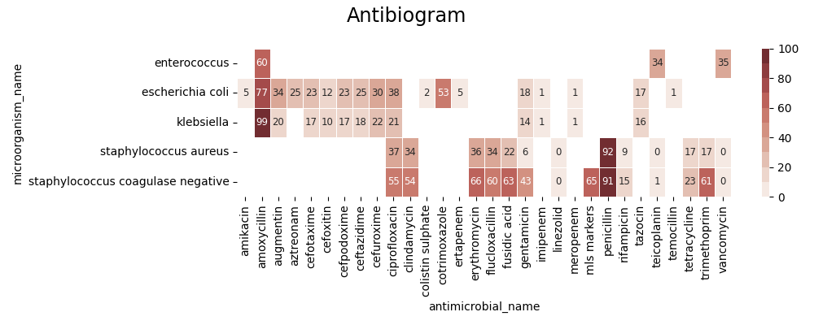

<!DOCTYPE html>
<html class="writer-html5" lang="en" >
<head>
  <meta charset="utf-8" />
  
  <meta name="viewport" content="width=device-width, initial-scale=1.0" />
  
  <title>Step 01 - Introduction &mdash; pyamr 0.0.1 documentation</title>
  

  
  <link rel="stylesheet" href="../../../_static/css/theme.css" type="text/css" />
  <link rel="stylesheet" href="../../../_static/pygments.css" type="text/css" />
  <link rel="stylesheet" href="../../../_static/gallery.css" type="text/css" />
  <link rel="stylesheet" href="../../../_static/gallery-binder.css" type="text/css" />
  <link rel="stylesheet" href="../../../_static/gallery-dataframe.css" type="text/css" />
  <link rel="stylesheet" href="../../../_static/gallery-rendered-html.css" type="text/css" />

  
  

  
  

  

  
  <!--[if lt IE 9]>
    <script src="../../../_static/js/html5shiv.min.js"></script>
  <![endif]-->
  
    
      <script type="text/javascript" id="documentation_options" data-url_root="../../../" src="../../../_static/documentation_options.js"></script>
        <script src="../../../_static/jquery.js"></script>
        <script src="../../../_static/underscore.js"></script>
        <script src="../../../_static/doctools.js"></script>
    
    <script type="text/javascript" src="../../../_static/js/theme.js"></script>

    
    <link rel="index" title="Index" href="../../../genindex.html" />
    <link rel="search" title="Search" href="../../../search.html" />
    <link rel="next" title="Step 02 - Time Series Analysis" href="plot_step_02.html" />
    <link rel="prev" title="Step 00 - Registries" href="plot_step_00.html" /> 
</head>

<body class="wy-body-for-nav">

   
  <div class="wy-grid-for-nav">
    
    <nav data-toggle="wy-nav-shift" class="wy-nav-side">
      <div class="wy-side-scroll">
        <div class="wy-side-nav-search" >
          

          
            <a href="../../../index.html" class="icon icon-home"> pyamr
          

          
          </a>

          
            
            
          

          
<div role="search">
  <form id="rtd-search-form" class="wy-form" action="../../../search.html" method="get">
    <input type="text" name="q" placeholder="Search docs" />
    <input type="hidden" name="check_keywords" value="yes" />
    <input type="hidden" name="area" value="default" />
  </form>
</div>

          
        </div>

        
        <div class="wy-menu wy-menu-vertical" data-spy="affix" role="navigation" aria-label="main navigation">
          
            
            
              
            
            
              <p class="caption"><span class="caption-text">Tutorial</span></p>
<ul>
<li class="toctree-l1"><a class="reference internal" href="../../../usage/introduction.html">Introduction</a></li>
<li class="toctree-l1"><a class="reference internal" href="../../../usage/installation.html">Installation</a></li>
<li class="toctree-l1"><a class="reference internal" href="../../../usage/quickstart.html">Quickstart</a></li>
<li class="toctree-l1"><a class="reference internal" href="../../../usage/registries.html">Registries</a></li>
<li class="toctree-l1"><a class="reference internal" href="../../../usage/todo.html">Future Actions</a></li>
</ul>
<p class="caption"><span class="caption-text">Example Galleries</span></p>
<ul class="current">
<li class="toctree-l1 current"><a class="reference internal" href="../index.html">Tutorial</a><ul class="current">
<li class="toctree-l2 current"><a class="reference internal" href="../index.html#guide">Guide</a><ul class="current">
<li class="toctree-l3"><a class="reference internal" href="plot_step_00.html">Step 00 - Registries</a></li>
<li class="toctree-l3 current"><a class="current reference internal" href="#">Step 01 - Introduction</a><ul>
<li class="toctree-l4"><a class="reference internal" href="#loading-data">Loading data</a></li>
<li class="toctree-l4"><a class="reference internal" href="#computing-freq">Computing Freq</a></li>
<li class="toctree-l4"><a class="reference internal" href="#computing-sari">Computing SARI</a></li>
<li class="toctree-l4"><a class="reference internal" href="#computing-asai">Computing ASAI</a></li>
<li class="toctree-l4"><a class="reference internal" href="#computing-sart">Computing SART</a></li>
<li class="toctree-l4"><a class="reference internal" href="#dirty-code-to-use-and-or-delete">Dirty code to use and or delete</a></li>
</ul>
</li>
<li class="toctree-l3"><a class="reference internal" href="plot_step_02.html">Step 02 - Time Series Analysis</a></li>
<li class="toctree-l3"><a class="reference internal" href="plot_step_03.html">Step 03 - TSA for trends</a></li>
</ul>
</li>
<li class="toctree-l2"><a class="reference internal" href="../index.html#indexes">Indexes</a></li>
<li class="toctree-l2"><a class="reference internal" href="../index.html#metrics">Metrics</a></li>
<li class="toctree-l2"><a class="reference internal" href="../index.html#regression">Regression</a></li>
<li class="toctree-l2"><a class="reference internal" href="../index.html#statistics">Statistics</a></li>
</ul>
</li>
<li class="toctree-l1"><a class="reference internal" href="../../indexes/index.html">Examples with AMR indexes</a></li>
<li class="toctree-l1"><a class="reference internal" href="../../forecasting/index.html">Examples with TSA</a></li>
<li class="toctree-l1"><a class="reference internal" href="../../reports/index.html">Reports</a></li>
<li class="toctree-l1"><a class="reference internal" href="../../visualization/index.html">Visualization</a></li>
</ul>
<p class="caption"><span class="caption-text">API</span></p>
<ul>
<li class="toctree-l1"><a class="reference internal" href="../../../_apidoc/modules.html">pyamr</a></li>
</ul>

            
          
        </div>
        
      </div>
    </nav>

    <section data-toggle="wy-nav-shift" class="wy-nav-content-wrap">

      
      <nav class="wy-nav-top" aria-label="top navigation">
        
          <i data-toggle="wy-nav-top" class="fa fa-bars"></i>
          <a href="../../../index.html">pyamr</a>
        
      </nav>


      <div class="wy-nav-content">
        
        <div class="rst-content">
        
          


<div role="navigation" aria-label="breadcrumbs navigation">

  <ul class="wy-breadcrumbs">
    
      <li><a href="../../../index.html" class="icon icon-home"></a> &raquo;</li>
        
          <li><a href="../index.html">Tutorial</a> &raquo;</li>
        
      <li>Step 01 - Introduction</li>
    
    
      <li class="wy-breadcrumbs-aside">
        
          
            <a href="../../../_sources/_examples/tutorial/guide/plot_step_01.rst.txt" rel="nofollow"> View page source</a>
          
        
      </li>
    
  </ul>

  
  <hr/>
</div>
          <div role="main" class="document" itemscope="itemscope" itemtype="http://schema.org/Article">
           <div itemprop="articleBody">
            
  <div class="sphx-glr-download-link-note admonition note">
<p class="admonition-title">Note</p>
<p>Click <a class="reference internal" href="#sphx-glr-download-examples-tutorial-guide-plot-step-01-py"><span class="std std-ref">here</span></a>
to download the full example code</p>
</div>
<div class="sphx-glr-example-title section" id="step-01-introduction">
<span id="sphx-glr-examples-tutorial-guide-plot-step-01-py"></span><h1>Step 01 - Introduction<a class="headerlink" href="#step-01-introduction" title="Permalink to this headline">¶</a></h1>
<div class="section" id="loading-data">
<h2>Loading data<a class="headerlink" href="#loading-data" title="Permalink to this headline">¶</a></h2>
<p>A <code class="docutils literal notranslate"><span class="pre">Susceptibility</span> <span class="pre">test</span></code> record is composed by laboratory identification
number (LID), patient identification number (PID), date, sample type or
culture (e.g. blood or urine), pathogen, antimicrobial, reported status
and outcome (resistant, sensitive or intermediate). In this research,
the susceptibility test data were grouped firstly by sample type. Moreover,
for each sample type, the data were grouped by pairs (pathogen, antimicrobial)
since it is widely accepted by clinicians as detailed in the UK five year
strategy in AMR</p>
<p>A small dataset will be used for this example.</p>
<div class="highlight-default notranslate"><table class="highlighttable"><tr><td class="linenos"><div class="linenodiv"><pre><span class="normal">33</span>
<span class="normal">34</span>
<span class="normal">35</span>
<span class="normal">36</span>
<span class="normal">37</span>
<span class="normal">38</span>
<span class="normal">39</span>
<span class="normal">40</span>
<span class="normal">41</span>
<span class="normal">42</span>
<span class="normal">43</span>
<span class="normal">44</span>
<span class="normal">45</span>
<span class="normal">46</span>
<span class="normal">47</span>
<span class="normal">48</span>
<span class="normal">49</span>
<span class="normal">50</span>
<span class="normal">51</span>
<span class="normal">52</span>
<span class="normal">53</span>
<span class="normal">54</span>
<span class="normal">55</span>
<span class="normal">56</span>
<span class="normal">57</span>
<span class="normal">58</span>
<span class="normal">59</span>
<span class="normal">60</span>
<span class="normal">61</span>
<span class="normal">62</span>
<span class="normal">63</span>
<span class="normal">64</span>
<span class="normal">65</span>
<span class="normal">66</span>
<span class="normal">67</span>
<span class="normal">68</span>
<span class="normal">69</span>
<span class="normal">70</span>
<span class="normal">71</span>
<span class="normal">72</span>
<span class="normal">73</span>
<span class="normal">74</span>
<span class="normal">75</span>
<span class="normal">76</span>
<span class="normal">77</span>
<span class="normal">78</span>
<span class="normal">79</span>
<span class="normal">80</span>
<span class="normal">81</span>
<span class="normal">82</span>
<span class="normal">83</span>
<span class="normal">84</span>
<span class="normal">85</span>
<span class="normal">86</span>
<span class="normal">87</span>
<span class="normal">88</span>
<span class="normal">89</span>
<span class="normal">90</span>
<span class="normal">91</span>
<span class="normal">92</span>
<span class="normal">93</span></pre></div></td><td class="code"><div class="highlight"><pre><span></span> <span class="c1"># Libraries</span>
 <span class="kn">import</span> <span class="nn">numpy</span> <span class="k">as</span> <span class="nn">np</span>
 <span class="kn">import</span> <span class="nn">pandas</span> <span class="k">as</span> <span class="nn">pd</span>
 <span class="kn">import</span> <span class="nn">seaborn</span> <span class="k">as</span> <span class="nn">sns</span>
 <span class="kn">import</span> <span class="nn">matplotlib</span> <span class="k">as</span> <span class="nn">mpl</span>
 <span class="kn">import</span> <span class="nn">matplotlib.pyplot</span> <span class="k">as</span> <span class="nn">plt</span>

 <span class="c1"># Import from pyAMR</span>
 <span class="kn">from</span> <span class="nn">pyamr.datasets.load</span> <span class="kn">import</span> <span class="n">make_susceptibility</span>

 <span class="c1"># -------------------------------------------</span>
 <span class="c1"># Constants</span>
 <span class="c1"># -------------------------------------------</span>
 <span class="c1"># Path</span>
 <span class="n">path</span> <span class="o">=</span> <span class="s1">&#39;../../../pyamr/datasets/microbiology/susceptibility.csv&#39;</span>
 <span class="n">path_org</span> <span class="o">=</span> <span class="s1">&#39;../../../pyamr/datasets/microbiology/db_microorganisms.csv&#39;</span>
 <span class="n">path_abx</span> <span class="o">=</span> <span class="s1">&#39;../../../pyamr/datasets/microbiology/db_antimicrobials.csv&#39;</span>

 <span class="c1"># Columns</span>
 <span class="n">usecols</span> <span class="o">=</span> <span class="p">[</span><span class="s1">&#39;dateReceived&#39;</span><span class="p">,</span>
            <span class="s1">&#39;labNumber&#39;</span><span class="p">,</span>
            <span class="s1">&#39;patNumber&#39;</span><span class="p">,</span>
            <span class="s1">&#39;orderName&#39;</span><span class="p">,</span>
            <span class="s1">&#39;orderCode&#39;</span><span class="p">,</span>
            <span class="s1">&#39;organismName&#39;</span><span class="p">,</span>
            <span class="s1">&#39;organismCode&#39;</span><span class="p">,</span>
            <span class="s1">&#39;antibioticName&#39;</span><span class="p">,</span>
            <span class="s1">&#39;antibioticCode&#39;</span><span class="p">,</span>
            <span class="s1">&#39;sensitivity&#39;</span><span class="p">]</span>

 <span class="c1"># Sensitivities to keep</span>
 <span class="n">sensitivities</span> <span class="o">=</span> <span class="p">[</span><span class="s1">&#39;sensitive&#39;</span><span class="p">,</span>
                  <span class="s1">&#39;intermediate&#39;</span><span class="p">,</span>
                  <span class="s1">&#39;resistant&#39;</span><span class="p">]</span>

 <span class="c1"># Specimens</span>
 <span class="n">specimen</span> <span class="o">=</span> <span class="p">[</span><span class="s1">&#39;BLDCUL&#39;</span><span class="p">]</span>

 <span class="c1"># -------------------------------------------</span>
 <span class="c1"># Load data</span>
 <span class="c1"># -------------------------------------------</span>
 <span class="c1"># Load data</span>
 <span class="n">data</span> <span class="o">=</span> <span class="n">make_susceptibility</span><span class="p">()</span>

 <span class="c1"># Clean</span>
 <span class="n">data</span> <span class="o">=</span> <span class="n">data</span><span class="p">[</span><span class="n">data</span><span class="o">.</span><span class="n">sensitivity</span><span class="o">.</span><span class="n">isin</span><span class="p">(</span><span class="n">sensitivities</span><span class="p">)]</span>
 <span class="n">data</span> <span class="o">=</span> <span class="n">data</span><span class="p">[</span><span class="n">data</span><span class="o">.</span><span class="n">specimen_code</span><span class="o">.</span><span class="n">isin</span><span class="p">(</span><span class="n">specimen</span><span class="p">)]</span>
 <span class="n">data</span> <span class="o">=</span> <span class="n">data</span><span class="o">.</span><span class="n">drop_duplicates</span><span class="p">()</span>

 <span class="c1"># Show</span>
 <span class="nb">print</span><span class="p">(</span><span class="s2">&quot;</span><span class="se">\n</span><span class="s2">Data:&quot;</span><span class="p">)</span>
 <span class="nb">print</span><span class="p">(</span><span class="n">data</span><span class="p">)</span>
 <span class="nb">print</span><span class="p">(</span><span class="s2">&quot;</span><span class="se">\n</span><span class="s2">Columns:&quot;</span><span class="p">)</span>
 <span class="nb">print</span><span class="p">(</span><span class="n">data</span><span class="o">.</span><span class="n">columns</span><span class="p">)</span>

 <span class="c1"># -------------------------------------------</span>
 <span class="c1"># Show a brief description</span>
 <span class="c1"># -------------------------------------------</span>
 <span class="c1"># .. todo: Compute basic information such as the number of unique organisms,</span>
 <span class="c1">#          antimicrobials, pairs, species, isolates, tests, the range of</span>
 <span class="c1">#          dates, ....</span>
</pre></div>
</td></tr></table></div>
<p class="sphx-glr-script-out">Out:</p>
<div class="sphx-glr-script-out highlight-none notranslate"><div class="highlight"><pre><span></span>Data:
              date_received         date_outcome LastActDateODBC  patient_id  ... microorganism_genus microorganism_specie microorganism_gram_type antimicrobial_class
24      2020-04-24 11:50:00  2020-04-28 00:00:00      28/04/2020           2  ...      staphylococcus               aureus                       p                 NaN
25      2020-04-24 11:50:00  2020-04-28 00:00:00      28/04/2020           2  ...      staphylococcus               aureus                       p    fluoroquinolones
26      2020-04-24 11:50:00  2020-04-28 00:00:00      28/04/2020           2  ...      staphylococcus               aureus                       p          macrolides
27      2020-04-24 11:50:00  2020-04-28 00:00:00      28/04/2020           2  ...      staphylococcus               aureus                       p          macrolides
28      2020-04-24 11:50:00  2020-04-28 00:00:00      28/04/2020           2  ...      staphylococcus               aureus                       p                 NaN
...                     ...                  ...             ...         ...  ...                 ...                  ...                     ...                 ...
124584  2021-01-18 12:08:00                  NaN      2021-01-24        7495  ...      staphylococcus   coagulase negative                       p         penicillins
124585  2021-01-18 12:08:00                  NaN      2021-01-24        7495  ...      staphylococcus   coagulase negative                       p                 NaN
124586  2021-01-18 12:08:00                  NaN      2021-01-24        7495  ...      staphylococcus   coagulase negative                       p                 NaN
124587  2021-01-18 12:08:00                  NaN      2021-01-24        7495  ...      staphylococcus   coagulase negative                       p       tetracyclines
124588  2021-01-18 12:08:00                  NaN      2021-01-24        7495  ...      staphylococcus   coagulase negative                       p                 NaN

[12438 rows x 22 columns]

Columns:
Index([&#39;date_received&#39;, &#39;date_outcome&#39;, &#39;LastActDateODBC&#39;, &#39;patient_id&#39;,
       &#39;laboratory_number&#39;, &#39;specimen_code&#39;, &#39;specimen_name&#39;,
       &#39;specimen_description&#39;, &#39;microorganism_piece_counter&#39;,
       &#39;microorganism_code&#39;, &#39;microorganism_name&#39;, &#39;antimicrobial_code&#39;,
       &#39;antimicrobial_name&#39;, &#39;sensitivity_method&#39;, &#39;sensitivity_code&#39;, &#39;mic&#39;,
       &#39;reported&#39;, &#39;sensitivity&#39;, &#39;microorganism_genus&#39;,
       &#39;microorganism_specie&#39;, &#39;microorganism_gram_type&#39;,
       &#39;antimicrobial_class&#39;],
      dtype=&#39;object&#39;)
</pre></div>
</div>
</div>
<div class="section" id="computing-freq">
<h2>Computing Freq<a class="headerlink" href="#computing-freq" title="Permalink to this headline">¶</a></h2>
<p>This section explains the main concepts in order to understand how the
computation of frequencies using the <code class="docutils literal notranslate"><span class="pre">Frequency</span></code> class works. For more
information see the documentation (xxx). The frequency can be computed using the
<code class="docutils literal notranslate"><span class="pre">Frequency</span></code> class for three different categories; the <code class="docutils literal notranslate"><span class="pre">organisms</span></code>,
<code class="docutils literal notranslate"><span class="pre">antibiotics</span></code> and <code class="docutils literal notranslate"><span class="pre">pairs</span></code> which are composed by an organism and an antibiotic.
In addition, regarding to time, the susceptibility data can be grouped following
different strategies:</p>
<ul class="simple">
<li><p><strong>Overall</strong> - <code class="docutils literal notranslate"><span class="pre">overall</span></code>
All the data is used and therefore the outcome is a single number for
the selected category (organisms, antibiotics or pairs)``. If no
strategy is specified this will be used.</p></li>
<li><p><strong>Independent time intervals</strong> - <code class="docutils literal notranslate"><span class="pre">ITI</span></code>
This is the traditional method used in antimicrobial surveillance systems
where the time spans considered are independent; that is, they do not overlap
(e.g. month or year).</p></li>
<li><p><strong>Overlapping time intervals</strong> - <code class="docutils literal notranslate"><span class="pre">OTI</span></code>
This method is defined as a fixed region which is moved across time to compute
consecutive resistance indexes. It is described by two parameters; the length
of the region (period) and the distance between consecutive windows (shift).</p></li>
</ul>
<p>For more information see <a class="reference internal" href="../indexes/plot_core_frequency.html#sphx-glr-examples-tutorial-indexes-plot-core-frequency-py"><span class="std std-ref">Index - Frequency</span></a>.</p>
<div class="highlight-default notranslate"><table class="highlighttable"><tr><td class="linenos"><div class="linenodiv"><pre><span class="normal">127</span>
<span class="normal">128</span>
<span class="normal">129</span>
<span class="normal">130</span>
<span class="normal">131</span>
<span class="normal">132</span>
<span class="normal">133</span>
<span class="normal">134</span>
<span class="normal">135</span>
<span class="normal">136</span>
<span class="normal">137</span>
<span class="normal">138</span>
<span class="normal">139</span>
<span class="normal">140</span>
<span class="normal">141</span>
<span class="normal">142</span>
<span class="normal">143</span>
<span class="normal">144</span>
<span class="normal">145</span>
<span class="normal">146</span>
<span class="normal">147</span>
<span class="normal">148</span>
<span class="normal">149</span>
<span class="normal">150</span>
<span class="normal">151</span>
<span class="normal">152</span>
<span class="normal">153</span>
<span class="normal">154</span>
<span class="normal">155</span>
<span class="normal">156</span>
<span class="normal">157</span>
<span class="normal">158</span>
<span class="normal">159</span>
<span class="normal">160</span>
<span class="normal">161</span></pre></div></td><td class="code"><div class="highlight"><pre><span></span> <span class="c1"># -------------------------------------------</span>
 <span class="c1"># Compute Freq</span>
 <span class="c1"># -------------------------------------------</span>
 <span class="c1"># Import specific libraries</span>
 <span class="kn">from</span> <span class="nn">pyamr.core.freq</span> <span class="kn">import</span> <span class="n">Frequency</span>

 <span class="c1"># Create instance</span>
 <span class="n">freq</span> <span class="o">=</span> <span class="n">Frequency</span><span class="p">(</span><span class="n">column_antibiotic</span><span class="o">=</span><span class="s1">&#39;antimicrobial_code&#39;</span><span class="p">,</span>
                  <span class="n">column_organism</span><span class="o">=</span><span class="s1">&#39;microorganism_code&#39;</span><span class="p">,</span>
                  <span class="n">column_date</span><span class="o">=</span><span class="s1">&#39;date_received&#39;</span><span class="p">,</span>
                  <span class="n">column_outcome</span><span class="o">=</span><span class="s1">&#39;sensitivity&#39;</span><span class="p">)</span>

 <span class="c1"># Compute frequencies (overall)</span>
 <span class="n">freq_overall</span> <span class="o">=</span> <span class="n">freq</span><span class="o">.</span><span class="n">compute</span><span class="p">(</span><span class="n">data</span><span class="p">,</span> <span class="n">by_category</span><span class="o">=</span><span class="s1">&#39;pairs&#39;</span><span class="p">)</span>

 <span class="c1"># Compute frequencies (monthly)</span>
 <span class="n">freq_monthly</span> <span class="o">=</span> <span class="n">freq</span><span class="o">.</span><span class="n">compute</span><span class="p">(</span><span class="n">data</span><span class="p">,</span> <span class="n">strategy</span><span class="o">=</span><span class="s1">&#39;ITI&#39;</span><span class="p">,</span>
                              <span class="n">by_category</span><span class="o">=</span><span class="s1">&#39;pairs&#39;</span><span class="p">,</span>
                              <span class="n">fs</span><span class="o">=</span><span class="s1">&#39;1M&#39;</span><span class="p">)</span>
 <span class="c1"># Add freq</span>
 <span class="n">freq_overall</span><span class="p">[</span><span class="s1">&#39;freq&#39;</span><span class="p">]</span> <span class="o">=</span> <span class="n">freq_overall</span><span class="o">.</span><span class="n">sum</span><span class="p">(</span><span class="n">axis</span><span class="o">=</span><span class="mi">1</span><span class="p">)</span>
 <span class="n">freq_monthly</span><span class="p">[</span><span class="s1">&#39;freq&#39;</span><span class="p">]</span> <span class="o">=</span> <span class="n">freq_monthly</span><span class="o">.</span><span class="n">sum</span><span class="p">(</span><span class="n">axis</span><span class="o">=</span><span class="mi">1</span><span class="p">)</span>

 <span class="c1"># Show</span>
 <span class="nb">print</span><span class="p">(</span><span class="s2">&quot;</span><span class="se">\n</span><span class="s2">Freq (overall):&quot;</span><span class="p">)</span>
 <span class="nb">print</span><span class="p">(</span><span class="n">freq_overall</span><span class="p">)</span>
 <span class="nb">print</span><span class="p">(</span><span class="s2">&quot;</span><span class="se">\n</span><span class="s2">Freq (monthly):&quot;</span><span class="p">)</span>
 <span class="nb">print</span><span class="p">(</span><span class="n">freq_monthly</span><span class="p">)</span>

 <span class="c1"># Plot</span>
 <span class="c1"># .. todo: Use bar plot or any other library to plot</span>
 <span class="c1">#          the frequency in time. Ideally with bars</span>
 <span class="c1">#          where x-axis is the time and y-axis is the</span>
 <span class="c1">#          freq. Avoid too many x-labels, keep just</span>
 <span class="c1">#          years?</span>
</pre></div>
</td></tr></table></div>
<p class="sphx-glr-script-out">Out:</p>
<div class="sphx-glr-script-out highlight-none notranslate"><div class="highlight"><pre><span></span>Freq (overall):
SENSITIVITY        intermediate  resistant  sensitive  freq
SPECIE ANTIBIOTIC
ABAU   AAMI                 0.0        0.0        1.0   1.0
       ACIP                 1.0        0.0        0.0   1.0
       ACOT                 0.0        0.0        1.0   1.0
       AGEN                 0.0        0.0        1.0   1.0
       AMER                 0.0        0.0        1.0   1.0
...                         ...        ...        ...   ...
STREP  AVAN                 0.0        0.0        5.0   5.0
SVES   ACLI                 0.0        0.0        1.0   1.0
       APEN                 0.0        0.0        1.0   1.0
       ATET                 0.0        0.0        1.0   1.0
       AVAN                 0.0        0.0        1.0   1.0

[688 rows x 4 columns]

Freq (monthly):
SENSITIVITY                   intermediate  resistant  sensitive  freq
SPECIE ANTIBIOTIC DATE
ABAU   AAMI       2020-08-31           0.0        0.0        1.0   1.0
       ACIP       2020-08-31           1.0        0.0        0.0   1.0
       ACOT       2020-08-31           0.0        0.0        1.0   1.0
       AGEN       2020-08-31           0.0        0.0        1.0   1.0
       AMER       2020-08-31           0.0        0.0        1.0   1.0
...                                    ...        ...        ...   ...
STREP  AVAN       2021-01-31           0.0        0.0        1.0   1.0
SVES   ACLI       2021-01-31           0.0        0.0        1.0   1.0
       APEN       2021-01-31           0.0        0.0        1.0   1.0
       ATET       2021-01-31           0.0        0.0        1.0   1.0
       AVAN       2021-01-31           0.0        0.0        1.0   1.0

[2935 rows x 4 columns]
</pre></div>
</div>
</div>
<div class="section" id="computing-sari">
<h2>Computing SARI<a class="headerlink" href="#computing-sari" title="Permalink to this headline">¶</a></h2>
<div class="admonition note">
<p class="admonition-title">Note</p>
<p>SARI can be computed very easily (class might not be needed)</p>
</div>
<p>The Single Antimicrobial Resistance Index - <code class="docutils literal notranslate"><span class="pre">SARI</span></code> - describes the proportion
of resistant isolates for a given set of susceptibility tests. It provides a
value within the range [0, 1] where values close to one indicate high resistance.
It is agnostic to pathogen, antibiotic and/or time. The variables <code class="docutils literal notranslate"><span class="pre">R</span></code>, <code class="docutils literal notranslate"><span class="pre">I</span></code> and
<code class="docutils literal notranslate"><span class="pre">S</span></code> represent the number of susceptibility tests with Resistant, Intermediate and
Susceptible outcomes respectively. The definition might vary slightly since the
intermediate category is not always considered.</p>
<p>The parameter strategy accepts three different options:</p>
<blockquote>
<div><ol class="lowerroman simple">
<li><p><code class="docutils literal notranslate"><span class="pre">soft</span></code>   as R / R+I+S</p></li>
<li><p><code class="docutils literal notranslate"><span class="pre">medium</span></code> as R / R+S</p></li>
<li><p><code class="docutils literal notranslate"><span class="pre">hard</span></code>  as R+I / R+I+S</p></li>
<li><p><code class="docutils literal notranslate"><span class="pre">other</span></code>  as R+0.5I / R+0.5I+S</p></li>
</ol>
</div></blockquote>
<p>For more information see <a class="reference internal" href="../indexes/plot_core_sari.html#sphx-glr-examples-tutorial-indexes-plot-core-sari-py"><span class="std std-ref">Index - SARI</span></a>.</p>
<div class="highlight-default notranslate"><table class="highlighttable"><tr><td class="linenos"><div class="linenodiv"><pre><span class="normal">187</span>
<span class="normal">188</span>
<span class="normal">189</span>
<span class="normal">190</span>
<span class="normal">191</span>
<span class="normal">192</span>
<span class="normal">193</span>
<span class="normal">194</span>
<span class="normal">195</span>
<span class="normal">196</span>
<span class="normal">197</span>
<span class="normal">198</span>
<span class="normal">199</span>
<span class="normal">200</span>
<span class="normal">201</span>
<span class="normal">202</span>
<span class="normal">203</span>
<span class="normal">204</span>
<span class="normal">205</span>
<span class="normal">206</span>
<span class="normal">207</span>
<span class="normal">208</span>
<span class="normal">209</span>
<span class="normal">210</span>
<span class="normal">211</span>
<span class="normal">212</span>
<span class="normal">213</span>
<span class="normal">214</span>
<span class="normal">215</span>
<span class="normal">216</span>
<span class="normal">217</span>
<span class="normal">218</span>
<span class="normal">219</span>
<span class="normal">220</span>
<span class="normal">221</span>
<span class="normal">222</span>
<span class="normal">223</span>
<span class="normal">224</span>
<span class="normal">225</span>
<span class="normal">226</span>
<span class="normal">227</span>
<span class="normal">228</span>
<span class="normal">229</span></pre></div></td><td class="code"><div class="highlight"><pre><span></span> <span class="c1"># -------------------------------------------</span>
 <span class="c1"># Compute SARI</span>
 <span class="c1"># -------------------------------------------</span>
 <span class="c1"># Import specific libraries</span>
 <span class="kn">from</span> <span class="nn">pyamr.core.sari</span> <span class="kn">import</span> <span class="n">SARI</span>

 <span class="c1"># Compute SARI</span>
 <span class="n">sari_overall</span> <span class="o">=</span> <span class="n">SARI</span><span class="p">(</span><span class="n">strategy</span><span class="o">=</span><span class="s1">&#39;hard&#39;</span><span class="p">)</span><span class="o">.</span><span class="n">compute</span><span class="p">(</span><span class="n">freq_overall</span><span class="p">)</span>
 <span class="n">sari_monthly</span> <span class="o">=</span> <span class="n">SARI</span><span class="p">(</span><span class="n">strategy</span><span class="o">=</span><span class="s1">&#39;hard&#39;</span><span class="p">)</span><span class="o">.</span><span class="n">compute</span><span class="p">(</span><span class="n">freq_monthly</span><span class="p">)</span>

 <span class="c1"># Show</span>
 <span class="nb">print</span><span class="p">(</span><span class="s2">&quot;</span><span class="se">\n</span><span class="s2">SARI (overall):&quot;</span><span class="p">)</span>
 <span class="nb">print</span><span class="p">(</span><span class="n">sari_overall</span><span class="p">)</span>
 <span class="nb">print</span><span class="p">(</span><span class="s2">&quot;</span><span class="se">\n</span><span class="s2">SARI (monthly):&quot;</span><span class="p">)</span>
 <span class="nb">print</span><span class="p">(</span><span class="n">sari_monthly</span><span class="p">)</span>

 <span class="c1"># Plot Heatmap</span>
 <span class="c1"># ------------</span>
 <span class="c1"># Create matrix</span>
 <span class="n">matrix</span> <span class="o">=</span> <span class="n">sari_overall</span><span class="o">.</span><span class="n">copy</span><span class="p">(</span><span class="n">deep</span><span class="o">=</span><span class="kc">True</span><span class="p">)</span>
 <span class="n">matrix</span> <span class="o">=</span> <span class="n">matrix</span><span class="p">[</span><span class="n">matrix</span><span class="o">.</span><span class="n">freq</span> <span class="o">&gt;</span> <span class="mi">100</span><span class="p">]</span>
 <span class="n">matrix</span> <span class="o">=</span> <span class="n">matrix</span><span class="p">[[</span><span class="s1">&#39;sari&#39;</span><span class="p">]]</span>
 <span class="n">matrix</span> <span class="o">=</span> <span class="n">matrix</span><span class="o">.</span><span class="n">unstack</span><span class="p">()</span> <span class="o">*</span> <span class="mi">100</span>
 <span class="n">matrix</span><span class="o">.</span><span class="n">columns</span> <span class="o">=</span> <span class="n">matrix</span><span class="o">.</span><span class="n">columns</span><span class="o">.</span><span class="n">droplevel</span><span class="p">()</span>

 <span class="c1"># Create figure</span>
 <span class="n">f</span><span class="p">,</span> <span class="n">ax</span> <span class="o">=</span> <span class="n">plt</span><span class="o">.</span><span class="n">subplots</span><span class="p">(</span><span class="mi">1</span><span class="p">,</span> <span class="mi">1</span><span class="p">,</span> <span class="n">figsize</span><span class="o">=</span><span class="p">(</span><span class="mi">10</span><span class="p">,</span> <span class="mi">4</span><span class="p">))</span>

 <span class="c1"># Create colormap</span>
 <span class="n">cmap</span> <span class="o">=</span> <span class="n">sns</span><span class="o">.</span><span class="n">color_palette</span><span class="p">(</span><span class="s2">&quot;Reds&quot;</span><span class="p">,</span> <span class="n">desat</span><span class="o">=</span><span class="mf">0.5</span><span class="p">,</span> <span class="n">n_colors</span><span class="o">=</span><span class="mi">10</span><span class="p">)</span>

 <span class="c1"># Plot</span>
 <span class="n">ax</span> <span class="o">=</span> <span class="n">sns</span><span class="o">.</span><span class="n">heatmap</span><span class="p">(</span><span class="n">data</span><span class="o">=</span><span class="n">matrix</span><span class="p">,</span> <span class="n">annot</span><span class="o">=</span><span class="kc">True</span><span class="p">,</span> <span class="n">fmt</span><span class="o">=</span><span class="s2">&quot;.0f&quot;</span><span class="p">,</span>
     <span class="n">annot_kws</span><span class="o">=</span><span class="p">{</span><span class="s1">&#39;fontsize&#39;</span><span class="p">:</span> <span class="s1">&#39;small&#39;</span><span class="p">},</span> <span class="n">cmap</span><span class="o">=</span><span class="n">cmap</span><span class="p">,</span>
     <span class="n">linewidth</span><span class="o">=</span><span class="mf">0.5</span><span class="p">,</span> <span class="n">vmin</span><span class="o">=</span><span class="mi">0</span><span class="p">,</span> <span class="n">vmax</span><span class="o">=</span><span class="mi">100</span><span class="p">,</span> <span class="n">ax</span><span class="o">=</span><span class="n">ax</span><span class="p">,</span>
     <span class="n">xticklabels</span><span class="o">=</span><span class="mi">1</span><span class="p">,</span> <span class="n">yticklabels</span><span class="o">=</span><span class="mi">1</span><span class="p">)</span>

 <span class="c1"># Add title</span>
 <span class="n">plt</span><span class="o">.</span><span class="n">suptitle</span><span class="p">(</span><span class="s2">&quot;Antibiogram&quot;</span><span class="p">,</span> <span class="n">fontsize</span><span class="o">=</span><span class="s1">&#39;xx-large&#39;</span><span class="p">)</span>

 <span class="c1"># Tight layout</span>
 <span class="n">plt</span><span class="o">.</span><span class="n">tight_layout</span><span class="p">()</span>
 <span class="n">plt</span><span class="o">.</span><span class="n">subplots_adjust</span><span class="p">(</span><span class="n">right</span><span class="o">=</span><span class="mf">1.05</span><span class="p">)</span>
</pre></div>
</td></tr></table></div>

<p class="sphx-glr-script-out">Out:</p>
<div class="sphx-glr-script-out highlight-none notranslate"><div class="highlight"><pre><span></span>SARI (overall):
SENSITIVITY        intermediate  resistant  sensitive  freq  sari
SPECIE ANTIBIOTIC
ABAU   AAMI                 0.0        0.0        1.0   1.0   0.0
       ACIP                 1.0        0.0        0.0   1.0   1.0
       ACOT                 0.0        0.0        1.0   1.0   0.0
       AGEN                 0.0        0.0        1.0   1.0   0.0
       AMER                 0.0        0.0        1.0   1.0   0.0
...                         ...        ...        ...   ...   ...
STREP  AVAN                 0.0        0.0        5.0   5.0   0.0
SVES   ACLI                 0.0        0.0        1.0   1.0   0.0
       APEN                 0.0        0.0        1.0   1.0   0.0
       ATET                 0.0        0.0        1.0   1.0   0.0
       AVAN                 0.0        0.0        1.0   1.0   0.0

[688 rows x 5 columns]

SARI (monthly):
SENSITIVITY                   intermediate  resistant  sensitive  freq  sari
SPECIE ANTIBIOTIC DATE
ABAU   AAMI       2020-08-31           0.0        0.0        1.0   1.0   0.0
       ACIP       2020-08-31           1.0        0.0        0.0   1.0   1.0
       ACOT       2020-08-31           0.0        0.0        1.0   1.0   0.0
       AGEN       2020-08-31           0.0        0.0        1.0   1.0   0.0
       AMER       2020-08-31           0.0        0.0        1.0   1.0   0.0
...                                    ...        ...        ...   ...   ...
STREP  AVAN       2021-01-31           0.0        0.0        1.0   1.0   0.0
SVES   ACLI       2021-01-31           0.0        0.0        1.0   1.0   0.0
       APEN       2021-01-31           0.0        0.0        1.0   1.0   0.0
       ATET       2021-01-31           0.0        0.0        1.0   1.0   0.0
       AVAN       2021-01-31           0.0        0.0        1.0   1.0   0.0

[2935 rows x 5 columns]
</pre></div>
</div>
</div>
<div class="section" id="computing-asai">
<h2>Computing ASAI<a class="headerlink" href="#computing-asai" title="Permalink to this headline">¶</a></h2>
<div class="admonition note">
<p class="admonition-title">Note</p>
<p>ASAI…</p>
</div>
<p>The antimicrobial spectrum of activity refers to the range of microbe species
that are susceptible to these agents and therefore can be treated. In general,
antimicrobial agents are classified into broad, intermediate or narrow spectrum.
Broad spectrum antimicrobials are active against both Gram-positive and
Gram-negative bacteria. In contrast, narrow spectrum antimicrobials have limited
activity and are effective only against particular species of bacteria. While these
profiles appeared in the mid-1950s, little effort has been made to define them.
Furthermore, such ambiguous labels are overused for different and even contradictory
purposes.</p>
<p>In order to compute the antimicrobial spectrum of activity index - <code class="docutils literal notranslate"><span class="pre">ASAI</span></code> -, it
is necessary to previously obtain the overall resistance (SARI) for all the
microbe-antimicrobial pairs. Furthermore, by following the criteria used in the
narrow-broad approach, these pairs were grouped into Gram-positive and Gram-negative.
Briefly, the weighted proportion of species to which the antimicrobial
is effective is computed for each genus. These are later added up and normalized by
the number of genera tested. An antimicrobial is considered effective to treat a
particular species when the corresponding resistance index (SARI) is lower than
a given threshold.</p>
<p>For more information see <a class="reference internal" href="../indexes/plot_core_asai.html#sphx-glr-examples-tutorial-indexes-plot-core-asai-py"><span class="std std-ref">Index - ASAI</span></a>.</p>
<div class="highlight-default notranslate"><table class="highlighttable"><tr><td class="linenos"><div class="linenodiv"><pre><span class="normal">261</span>
<span class="normal">262</span>
<span class="normal">263</span>
<span class="normal">264</span>
<span class="normal">265</span>
<span class="normal">266</span>
<span class="normal">267</span>
<span class="normal">268</span>
<span class="normal">269</span>
<span class="normal">270</span>
<span class="normal">271</span>
<span class="normal">272</span>
<span class="normal">273</span>
<span class="normal">274</span>
<span class="normal">275</span>
<span class="normal">276</span>
<span class="normal">277</span>
<span class="normal">278</span>
<span class="normal">279</span>
<span class="normal">280</span>
<span class="normal">281</span>
<span class="normal">282</span>
<span class="normal">283</span>
<span class="normal">284</span>
<span class="normal">285</span>
<span class="normal">286</span>
<span class="normal">287</span>
<span class="normal">288</span>
<span class="normal">289</span>
<span class="normal">290</span>
<span class="normal">291</span>
<span class="normal">292</span>
<span class="normal">293</span>
<span class="normal">294</span>
<span class="normal">295</span>
<span class="normal">296</span>
<span class="normal">297</span>
<span class="normal">298</span>
<span class="normal">299</span>
<span class="normal">300</span>
<span class="normal">301</span>
<span class="normal">302</span>
<span class="normal">303</span>
<span class="normal">304</span>
<span class="normal">305</span>
<span class="normal">306</span>
<span class="normal">307</span>
<span class="normal">308</span>
<span class="normal">309</span>
<span class="normal">310</span>
<span class="normal">311</span>
<span class="normal">312</span>
<span class="normal">313</span>
<span class="normal">314</span>
<span class="normal">315</span>
<span class="normal">316</span>
<span class="normal">317</span>
<span class="normal">318</span>
<span class="normal">319</span>
<span class="normal">320</span>
<span class="normal">321</span>
<span class="normal">322</span>
<span class="normal">323</span>
<span class="normal">324</span>
<span class="normal">325</span>
<span class="normal">326</span>
<span class="normal">327</span>
<span class="normal">328</span>
<span class="normal">329</span>
<span class="normal">330</span>
<span class="normal">331</span>
<span class="normal">332</span>
<span class="normal">333</span>
<span class="normal">334</span>
<span class="normal">335</span>
<span class="normal">336</span>
<span class="normal">337</span>
<span class="normal">338</span>
<span class="normal">339</span>
<span class="normal">340</span>
<span class="normal">341</span>
<span class="normal">342</span>
<span class="normal">343</span>
<span class="normal">344</span>
<span class="normal">345</span>
<span class="normal">346</span>
<span class="normal">347</span>
<span class="normal">348</span>
<span class="normal">349</span>
<span class="normal">350</span>
<span class="normal">351</span>
<span class="normal">352</span>
<span class="normal">353</span>
<span class="normal">354</span>
<span class="normal">355</span>
<span class="normal">356</span>
<span class="normal">357</span>
<span class="normal">358</span>
<span class="normal">359</span>
<span class="normal">360</span>
<span class="normal">361</span>
<span class="normal">362</span>
<span class="normal">363</span>
<span class="normal">364</span>
<span class="normal">365</span>
<span class="normal">366</span>
<span class="normal">367</span>
<span class="normal">368</span>
<span class="normal">369</span>
<span class="normal">370</span>
<span class="normal">371</span>
<span class="normal">372</span>
<span class="normal">373</span>
<span class="normal">374</span>
<span class="normal">375</span>
<span class="normal">376</span>
<span class="normal">377</span>
<span class="normal">378</span>
<span class="normal">379</span>
<span class="normal">380</span>
<span class="normal">381</span>
<span class="normal">382</span>
<span class="normal">383</span>
<span class="normal">384</span>
<span class="normal">385</span>
<span class="normal">386</span>
<span class="normal">387</span>
<span class="normal">388</span>
<span class="normal">389</span>
<span class="normal">390</span></pre></div></td><td class="code"><div class="highlight"><pre><span></span> <span class="c1"># -------------------------------------------</span>
 <span class="c1"># Compute ASAI</span>
 <span class="c1"># -------------------------------------------</span>
 <span class="c1"># Import specific libraries</span>
 <span class="kn">from</span> <span class="nn">pyamr.core.asai</span> <span class="kn">import</span> <span class="n">ASAI</span>


 <span class="c1"># Format DataFrame</span>
 <span class="n">dataframe</span> <span class="o">=</span> <span class="n">sari_overall</span><span class="o">.</span><span class="n">copy</span><span class="p">(</span><span class="n">deep</span><span class="o">=</span><span class="kc">True</span><span class="p">)</span>
 <span class="n">dataframe</span> <span class="o">=</span> <span class="n">sari_overall</span><span class="o">.</span><span class="n">reset_index</span><span class="p">()</span>
 <span class="n">dataframe</span> <span class="o">=</span> <span class="n">dataframe</span><span class="o">.</span><span class="n">merge</span><span class="p">(</span><span class="n">data</span><span class="p">,</span> <span class="n">how</span><span class="o">=</span><span class="s1">&#39;left&#39;</span><span class="p">,</span>
     <span class="n">left_on</span><span class="o">=</span><span class="s1">&#39;SPECIE&#39;</span><span class="p">,</span> <span class="n">right_on</span><span class="o">=</span><span class="s1">&#39;microorganism_code&#39;</span><span class="p">)</span>

 <span class="c1"># Fill empty</span>
 <span class="c1"># .. note: Leads to division by 0 (investigate)</span>
 <span class="n">dataframe</span><span class="o">.</span><span class="n">microorganism_gram_type</span> <span class="o">=</span> \
     <span class="n">dataframe</span><span class="o">.</span><span class="n">microorganism_gram_type</span><span class="o">.</span><span class="n">fillna</span><span class="p">(</span><span class="s1">&#39;u&#39;</span><span class="p">)</span>

 <span class="nb">print</span><span class="p">(</span><span class="n">dataframe</span><span class="o">.</span><span class="n">columns</span><span class="p">)</span>

 <span class="c1"># Create antimicrobial spectrum of activity instance</span>
 <span class="n">asai</span> <span class="o">=</span> <span class="n">ASAI</span><span class="p">(</span><span class="n">weights</span><span class="o">=</span><span class="s1">&#39;uniform&#39;</span><span class="p">,</span>
             <span class="n">threshold</span><span class="o">=</span><span class="mf">0.05</span><span class="p">,</span>
             <span class="n">column_genus</span><span class="o">=</span><span class="s1">&#39;microorganism_name&#39;</span><span class="p">,</span>
             <span class="n">column_specie</span><span class="o">=</span><span class="s1">&#39;SPECIE&#39;</span><span class="p">,</span>
             <span class="n">column_antibiotic</span><span class="o">=</span><span class="s1">&#39;ANTIBIOTIC&#39;</span><span class="p">,</span>
             <span class="n">column_resistance</span><span class="o">=</span><span class="s1">&#39;sari&#39;</span><span class="p">)</span>

 <span class="c1"># Compute</span>
 <span class="n">scores</span> <span class="o">=</span> <span class="n">asai</span><span class="o">.</span><span class="n">compute</span><span class="p">(</span><span class="n">dataframe</span><span class="p">,</span>
             <span class="n">by_category</span><span class="o">=</span><span class="s1">&#39;microorganism_gram_type&#39;</span><span class="p">)</span>

 <span class="c1"># .. note: In order to sort the scores we need to compute metrics</span>
 <span class="c1">#          that combine the different subcategories (e.g. gram-negative</span>
 <span class="c1">#          and gram-positive). Two possible options are: (i) use the</span>
 <span class="c1">#          gmean or (ii) the width.</span>
 <span class="c1"># Measures</span>
 <span class="n">scores</span> <span class="o">=</span> <span class="n">scores</span><span class="o">.</span><span class="n">fillna</span><span class="p">(</span><span class="mf">0.0</span><span class="p">)</span>
 <span class="n">scores</span><span class="p">[</span><span class="s1">&#39;width&#39;</span><span class="p">]</span> <span class="o">=</span> <span class="n">np</span><span class="o">.</span><span class="n">abs</span><span class="p">(</span><span class="n">scores</span><span class="p">[</span><span class="s1">&#39;ASAI_SCORE&#39;</span><span class="p">][</span><span class="s1">&#39;n&#39;</span><span class="p">]</span> <span class="o">+</span> <span class="n">scores</span><span class="p">[</span><span class="s1">&#39;ASAI_SCORE&#39;</span><span class="p">][</span><span class="s1">&#39;p&#39;</span><span class="p">])</span>
 <span class="n">scores</span><span class="p">[</span><span class="s1">&#39;gmean&#39;</span><span class="p">]</span> <span class="o">=</span> <span class="n">np</span><span class="o">.</span><span class="n">sqrt</span><span class="p">(</span><span class="n">scores</span><span class="p">[</span><span class="s1">&#39;ASAI_SCORE&#39;</span><span class="p">][</span><span class="s1">&#39;n&#39;</span><span class="p">]</span> <span class="o">*</span> <span class="n">scores</span><span class="p">[</span><span class="s1">&#39;ASAI_SCORE&#39;</span><span class="p">][</span><span class="s1">&#39;p&#39;</span><span class="p">])</span>
 <span class="n">scores</span> <span class="o">=</span> <span class="n">scores</span><span class="o">.</span><span class="n">sort_values</span><span class="p">(</span><span class="n">by</span><span class="o">=</span><span class="s1">&#39;gmean&#39;</span><span class="p">,</span> <span class="n">ascending</span><span class="o">=</span><span class="kc">False</span><span class="p">)</span>

 <span class="c1"># Show scores</span>
 <span class="nb">print</span><span class="p">(</span><span class="s2">&quot;Data output:&quot;</span><span class="p">)</span>
 <span class="nb">print</span><span class="p">(</span><span class="n">scores</span><span class="p">)</span>


 <span class="c1"># ----------------</span>
 <span class="c1"># Plot</span>
 <span class="c1"># ----------------</span>
 <span class="k">def</span> <span class="nf">scalar_colormap</span><span class="p">(</span><span class="n">values</span><span class="p">,</span> <span class="n">cmap</span><span class="p">,</span> <span class="n">vmin</span><span class="p">,</span> <span class="n">vmax</span><span class="p">):</span>
     <span class="sd">&quot;&quot;&quot;This method creates a colormap based on values.</span>

<span class="sd">     Parameters</span>
<span class="sd">     ----------</span>
<span class="sd">     values : array-like</span>
<span class="sd">       The values to create the corresponding colors</span>

<span class="sd">     cmap : str</span>
<span class="sd">       The colormap</span>

<span class="sd">     vmin, vmax : float</span>
<span class="sd">       The minimum and maximum possible values</span>

<span class="sd">     Returns</span>
<span class="sd">     -------</span>
<span class="sd">     scalar colormap</span>
<span class="sd">     &quot;&quot;&quot;</span>
     <span class="c1"># Create scalar mappable</span>
     <span class="n">norm</span> <span class="o">=</span> <span class="n">mpl</span><span class="o">.</span><span class="n">colors</span><span class="o">.</span><span class="n">Normalize</span><span class="p">(</span><span class="n">vmin</span><span class="o">=</span><span class="n">vmin</span><span class="p">,</span> <span class="n">vmax</span><span class="o">=</span><span class="n">vmax</span><span class="p">,</span> <span class="n">clip</span><span class="o">=</span><span class="kc">True</span><span class="p">)</span>
     <span class="n">mapper</span> <span class="o">=</span> <span class="n">mpl</span><span class="o">.</span><span class="n">cm</span><span class="o">.</span><span class="n">ScalarMappable</span><span class="p">(</span><span class="n">norm</span><span class="o">=</span><span class="n">norm</span><span class="p">,</span> <span class="n">cmap</span><span class="o">=</span><span class="n">cmap</span><span class="p">)</span>
     <span class="c1"># Gete color map</span>
     <span class="n">colormap</span> <span class="o">=</span> <span class="n">sns</span><span class="o">.</span><span class="n">color_palette</span><span class="p">([</span><span class="n">mapper</span><span class="o">.</span><span class="n">to_rgba</span><span class="p">(</span><span class="n">i</span><span class="p">)</span> <span class="k">for</span> <span class="n">i</span> <span class="ow">in</span> <span class="n">values</span><span class="p">])</span>
     <span class="c1"># Return</span>
     <span class="k">return</span> <span class="n">colormap</span>


 <span class="c1"># Variables to plot.</span>
 <span class="n">x</span> <span class="o">=</span> <span class="n">scores</span><span class="o">.</span><span class="n">index</span><span class="o">.</span><span class="n">values</span>
 <span class="n">y_n</span> <span class="o">=</span> <span class="n">scores</span><span class="p">[</span><span class="s1">&#39;ASAI_SCORE&#39;</span><span class="p">][</span><span class="s1">&#39;n&#39;</span><span class="p">]</span><span class="o">.</span><span class="n">values</span>
 <span class="n">y_p</span> <span class="o">=</span> <span class="n">scores</span><span class="p">[</span><span class="s1">&#39;ASAI_SCORE&#39;</span><span class="p">][</span><span class="s1">&#39;p&#39;</span><span class="p">]</span><span class="o">.</span><span class="n">values</span>
 <span class="n">y_u</span> <span class="o">=</span> <span class="n">scores</span><span class="p">[</span><span class="s1">&#39;ASAI_SCORE&#39;</span><span class="p">][</span><span class="s1">&#39;u&#39;</span><span class="p">]</span><span class="o">.</span><span class="n">values</span>

 <span class="c1"># Constants</span>
 <span class="n">colormap_p</span> <span class="o">=</span> <span class="n">scalar_colormap</span><span class="p">(</span><span class="n">y_p</span><span class="p">,</span> <span class="n">cmap</span><span class="o">=</span><span class="s1">&#39;Blues&#39;</span><span class="p">,</span> <span class="n">vmin</span><span class="o">=-</span><span class="mf">0.1</span><span class="p">,</span> <span class="n">vmax</span><span class="o">=</span><span class="mf">1.1</span><span class="p">)</span>
 <span class="n">colormap_n</span> <span class="o">=</span> <span class="n">scalar_colormap</span><span class="p">(</span><span class="n">y_n</span><span class="p">,</span> <span class="n">cmap</span><span class="o">=</span><span class="s1">&#39;Reds&#39;</span><span class="p">,</span> <span class="n">vmin</span><span class="o">=-</span><span class="mf">0.1</span><span class="p">,</span> <span class="n">vmax</span><span class="o">=</span><span class="mf">1.1</span><span class="p">)</span>
 <span class="n">colormap_u</span> <span class="o">=</span> <span class="n">scalar_colormap</span><span class="p">(</span><span class="n">y_u</span><span class="p">,</span> <span class="n">cmap</span><span class="o">=</span><span class="s1">&#39;Greens&#39;</span><span class="p">,</span> <span class="n">vmin</span><span class="o">=-</span><span class="mf">0.1</span><span class="p">,</span> <span class="n">vmax</span><span class="o">=</span><span class="mf">1.1</span><span class="p">)</span>

 <span class="c1"># ----------</span>
 <span class="c1"># Example</span>
 <span class="c1"># ----------</span>
 <span class="c1"># This example shows an stacked figure using more than two categories.</span>
 <span class="c1"># For instance, it uses gram-positive, gram-negative and gram-unknown.</span>
 <span class="c1"># All the indexes go within the range [0,1].</span>
 <span class="c1"># Create the figure</span>
 <span class="n">f</span><span class="p">,</span> <span class="n">axes</span> <span class="o">=</span> <span class="n">plt</span><span class="o">.</span><span class="n">subplots</span><span class="p">(</span><span class="mi">1</span><span class="p">,</span> <span class="mi">3</span><span class="p">,</span> <span class="n">figsize</span><span class="o">=</span><span class="p">(</span><span class="mi">7</span><span class="p">,</span> <span class="mi">7</span><span class="p">))</span>

 <span class="c1"># Plot each category</span>
 <span class="n">sns</span><span class="o">.</span><span class="n">barplot</span><span class="p">(</span><span class="n">x</span><span class="o">=</span><span class="n">y_p</span><span class="p">,</span> <span class="n">y</span><span class="o">=</span><span class="n">x</span><span class="p">,</span> <span class="n">palette</span><span class="o">=</span><span class="n">colormap_p</span><span class="p">,</span> <span class="n">ax</span><span class="o">=</span><span class="n">axes</span><span class="p">[</span><span class="mi">0</span><span class="p">],</span> <span class="n">orient</span><span class="o">=</span><span class="s1">&#39;h&#39;</span><span class="p">,</span>
             <span class="n">saturation</span><span class="o">=</span><span class="mf">0.5</span><span class="p">,</span> <span class="n">label</span><span class="o">=</span><span class="s1">&#39;Gram-positive&#39;</span><span class="p">)</span>
 <span class="n">sns</span><span class="o">.</span><span class="n">barplot</span><span class="p">(</span><span class="n">x</span><span class="o">=</span><span class="n">y_n</span><span class="p">,</span> <span class="n">y</span><span class="o">=</span><span class="n">x</span><span class="p">,</span> <span class="n">palette</span><span class="o">=</span><span class="n">colormap_n</span><span class="p">,</span> <span class="n">ax</span><span class="o">=</span><span class="n">axes</span><span class="p">[</span><span class="mi">1</span><span class="p">],</span> <span class="n">orient</span><span class="o">=</span><span class="s1">&#39;h&#39;</span><span class="p">,</span>
             <span class="n">saturation</span><span class="o">=</span><span class="mf">0.5</span><span class="p">,</span> <span class="n">label</span><span class="o">=</span><span class="s1">&#39;Gram-negative&#39;</span><span class="p">)</span>
 <span class="n">sns</span><span class="o">.</span><span class="n">barplot</span><span class="p">(</span><span class="n">x</span><span class="o">=</span><span class="n">y_u</span><span class="p">,</span> <span class="n">y</span><span class="o">=</span><span class="n">x</span><span class="p">,</span> <span class="n">palette</span><span class="o">=</span><span class="n">colormap_u</span><span class="p">,</span> <span class="n">ax</span><span class="o">=</span><span class="n">axes</span><span class="p">[</span><span class="mi">2</span><span class="p">],</span> <span class="n">orient</span><span class="o">=</span><span class="s1">&#39;h&#39;</span><span class="p">,</span>
             <span class="n">saturation</span><span class="o">=</span><span class="mf">0.5</span><span class="p">,</span> <span class="n">label</span><span class="o">=</span><span class="s1">&#39;Gram-unknown&#39;</span><span class="p">)</span>

 <span class="c1"># Configure</span>
 <span class="n">sns</span><span class="o">.</span><span class="n">despine</span><span class="p">(</span><span class="n">bottom</span><span class="o">=</span><span class="kc">True</span><span class="p">)</span>

 <span class="c1"># Format figure</span>
 <span class="n">plt</span><span class="o">.</span><span class="n">subplots_adjust</span><span class="p">(</span><span class="n">wspace</span><span class="o">=</span><span class="mf">0.0</span><span class="p">,</span> <span class="n">hspace</span><span class="o">=</span><span class="mf">0.0</span><span class="p">)</span>

 <span class="c1"># Remove yticks</span>
 <span class="n">axes</span><span class="p">[</span><span class="mi">1</span><span class="p">]</span><span class="o">.</span><span class="n">set_yticks</span><span class="p">([])</span>
 <span class="n">axes</span><span class="p">[</span><span class="mi">2</span><span class="p">]</span><span class="o">.</span><span class="n">set_yticks</span><span class="p">([])</span>

 <span class="c1"># Set title</span>
 <span class="n">axes</span><span class="p">[</span><span class="mi">0</span><span class="p">]</span><span class="o">.</span><span class="n">set_title</span><span class="p">(</span><span class="s1">&#39;Gram-positive&#39;</span><span class="p">)</span>
 <span class="n">axes</span><span class="p">[</span><span class="mi">1</span><span class="p">]</span><span class="o">.</span><span class="n">set_title</span><span class="p">(</span><span class="s1">&#39;Gram-negative&#39;</span><span class="p">)</span>
 <span class="n">axes</span><span class="p">[</span><span class="mi">2</span><span class="p">]</span><span class="o">.</span><span class="n">set_title</span><span class="p">(</span><span class="s1">&#39;Gram-unknown&#39;</span><span class="p">)</span>

 <span class="c1"># Set x-axis</span>
 <span class="n">axes</span><span class="p">[</span><span class="mi">0</span><span class="p">]</span><span class="o">.</span><span class="n">set_xlim</span><span class="p">([</span><span class="mi">0</span><span class="p">,</span> <span class="mf">1.1</span><span class="p">])</span>
 <span class="n">axes</span><span class="p">[</span><span class="mi">1</span><span class="p">]</span><span class="o">.</span><span class="n">set_xlim</span><span class="p">([</span><span class="mi">0</span><span class="p">,</span> <span class="mf">1.1</span><span class="p">])</span>
 <span class="n">axes</span><span class="p">[</span><span class="mi">2</span><span class="p">]</span><span class="o">.</span><span class="n">set_xlim</span><span class="p">([</span><span class="mi">0</span><span class="p">,</span> <span class="mf">1.1</span><span class="p">])</span>

 <span class="c1"># Adjust</span>
 <span class="n">plt</span><span class="o">.</span><span class="n">tight_layout</span><span class="p">()</span>

 <span class="c1"># Show</span>
 <span class="n">plt</span><span class="o">.</span><span class="n">show</span><span class="p">()</span>
</pre></div>
</td></tr></table></div>

<p class="sphx-glr-script-out">Out:</p>
<div class="sphx-glr-script-out highlight-none notranslate"><div class="highlight"><pre><span></span>Index([&#39;SPECIE&#39;, &#39;ANTIBIOTIC&#39;, &#39;intermediate&#39;, &#39;resistant&#39;, &#39;sensitive&#39;,
       &#39;freq&#39;, &#39;sari&#39;, &#39;date_received&#39;, &#39;date_outcome&#39;, &#39;LastActDateODBC&#39;,
       &#39;patient_id&#39;, &#39;laboratory_number&#39;, &#39;specimen_code&#39;, &#39;specimen_name&#39;,
       &#39;specimen_description&#39;, &#39;microorganism_piece_counter&#39;,
       &#39;microorganism_code&#39;, &#39;microorganism_name&#39;, &#39;antimicrobial_code&#39;,
       &#39;antimicrobial_name&#39;, &#39;sensitivity_method&#39;, &#39;sensitivity_code&#39;, &#39;mic&#39;,
       &#39;reported&#39;, &#39;sensitivity&#39;, &#39;microorganism_genus&#39;,
       &#39;microorganism_specie&#39;, &#39;microorganism_gram_type&#39;,
       &#39;antimicrobial_class&#39;],
      dtype=&#39;object&#39;)
Data output:
                        N_GENUS             N_SPECIE             ASAI_SCORE                         width     gmean
microorganism_gram_type       n     p     u        n     p     u          n         p         u
ANTIBIOTIC
ANIT                        1.0   1.0   1.0      1.0   1.0   1.0   1.000000  1.000000  1.000000  2.000000  1.000000
AMER                       12.0   1.0  14.0     12.0   1.0  14.0   0.750000  1.000000  1.000000  1.750000  0.866025
AFOX                        6.0   1.0   4.0      6.0   1.0   4.0   0.500000  1.000000  1.000000  1.500000  0.707107
ACOT                        8.0   1.0  12.0      8.0   1.0  12.0   0.500000  1.000000  0.916667  1.500000  0.707107
ATIG                        8.0   4.0   8.0      8.0   4.0   8.0   0.625000  0.500000  1.000000  1.125000  0.559017
ACIP                       11.0   4.0  12.0     11.0   4.0  12.0   0.545455  0.500000  1.000000  1.045455  0.522233
ATRI                        1.0   5.0   2.0      1.0   5.0   2.0   1.000000  0.200000  0.500000  1.200000  0.447214
AAUG                        5.0   1.0   4.0      5.0   1.0   4.0   0.200000  1.000000  1.000000  1.200000  0.447214
AGEN                       12.0   6.0  13.0     12.0   6.0  13.0   0.583333  0.333333  1.000000  0.916667  0.440959
AMET                        0.0   4.0   2.0      0.0   4.0   2.0   0.000000  0.250000  1.000000  0.250000  0.000000
AMF                         0.0   0.0   1.0      0.0   0.0   1.0   0.000000  0.000000  1.000000  0.000000  0.000000
AMLS                        0.0   5.0   0.0      0.0   5.0   0.0   0.000000  0.200000  0.000000  0.200000  0.000000
AMTZ                        0.0   2.0   1.0      0.0   2.0   1.0   0.000000  0.500000  1.000000  0.500000  0.000000
AMUP                        0.0   7.0   0.0      0.0   7.0   0.0   0.000000  0.714286  0.000000  0.714286  0.000000
ANEO                        0.0   7.0   2.0      0.0   7.0   2.0   0.000000  0.571429  1.000000  0.571429  0.000000
ARIF                        0.0   9.0   3.0      0.0   9.0   3.0   0.000000  0.555556  1.000000  0.555556  0.000000
APCZ                        0.0   0.0   1.0      0.0   0.0   1.0   0.000000  0.000000  1.000000  0.000000  0.000000
APEN                        0.0  23.0   5.0      0.0  23.0   5.0   0.000000  0.695652  1.000000  0.695652  0.000000
ALEV                        0.0   1.0   1.0      0.0   1.0   1.0   0.000000  1.000000  1.000000  1.000000  0.000000
ATAZ                       11.0   0.0   7.0     11.0   0.0   7.0   0.454545  0.000000  0.857143  0.454545  0.000000
ATEI                        0.0   6.0   0.0      0.0   6.0   0.0   0.000000  0.666667  0.000000  0.666667  0.000000
ATEM                        9.0   0.0   5.0      9.0   0.0   5.0   0.666667  0.000000  1.000000  0.666667  0.000000
ATET                        0.0  14.0   7.0      0.0  14.0   7.0   0.000000  0.642857  1.000000  0.642857  0.000000
ATOB                        3.0   0.0   0.0      3.0   0.0   0.0   0.666667  0.000000  0.000000  0.666667  0.000000
AVAN                        0.0  25.0   4.0      0.0  25.0   4.0   0.000000  0.960000  1.000000  0.960000  0.000000
ALIN                        0.0  13.0   4.0      0.0  13.0   4.0   0.000000  1.000000  1.000000  1.000000  0.000000
AAMI                       12.0   0.0  12.0     12.0   0.0  12.0   0.916667  0.000000  1.000000  0.916667  0.000000
AITR                        0.0   0.0   1.0      0.0   0.0   1.0   0.000000  0.000000  1.000000  0.000000  0.000000
AIMP                        3.0   0.0   2.0      3.0   0.0   2.0   0.666667  0.000000  1.000000  0.666667  0.000000
AAMPH                       0.0   0.0   1.0      0.0   0.0   1.0   0.000000  0.000000  1.000000  0.000000  0.000000
AAND                        0.0   0.0   1.0      0.0   0.0   1.0   0.000000  0.000000  1.000000  0.000000  0.000000
AAZT                        9.0   0.0   5.0      9.0   0.0   5.0   0.444444  0.000000  0.800000  0.444444  0.000000
ACAZ                       10.0   0.0   5.0     10.0   0.0   5.0   0.400000  0.000000  0.800000  0.400000  0.000000
ACHL                        0.0   9.0   3.0      0.0   9.0   3.0   0.000000  0.888889  1.000000  0.888889  0.000000
ACLI                        0.0  21.0   4.0      0.0  21.0   4.0   0.000000  0.428571  0.750000  0.428571  0.000000
ACLZ                        3.0   0.0   0.0      3.0   0.0   0.0   0.666667  0.000000  0.000000  0.666667  0.000000
ACONE                       7.0   0.0   7.0      7.0   0.0   7.0   0.428571  0.000000  0.857143  0.428571  0.000000
ACPIM                       4.0   0.0   1.0      4.0   0.0   1.0   0.750000  0.000000  1.000000  0.750000  0.000000
ACPO                        1.0   0.0   0.0      1.0   0.0   0.0   1.000000  0.000000  0.000000  1.000000  0.000000
ACXM                        6.0   0.0   7.0      6.0   0.0   7.0   0.166667  0.000000  0.857143  0.166667  0.000000
ACZA                       10.0   0.0   3.0     10.0   0.0   3.0   0.900000  0.000000  1.000000  0.900000  0.000000
ADAP                        0.0   2.0   0.0      0.0   2.0   0.0   0.000000  1.000000  0.000000  1.000000  0.000000
AERT                        9.0   0.0   8.0      9.0   0.0   8.0   0.777778  0.000000  1.000000  0.777778  0.000000
AERY                        0.0  12.0   2.0      0.0  12.0   2.0   0.000000  0.416667  0.500000  0.416667  0.000000
AESBL                       3.0   0.0   0.0      3.0   0.0   0.0   0.333333  0.000000  0.000000  0.333333  0.000000
AFLUZ                       0.0   0.0   1.0      0.0   0.0   1.0   0.000000  0.000000  1.000000  0.000000  0.000000
AFUS                        0.0   8.0   2.0      0.0   8.0   2.0   0.000000  0.500000  1.000000  0.500000  0.000000
AAMP                        2.0   3.0   2.0      2.0   3.0   2.0   0.000000  0.666667  1.000000  0.666667  0.000000
AVOR                        0.0   0.0   1.0      0.0   0.0   1.0   0.000000  0.000000  1.000000  0.000000  0.000000
</pre></div>
</div>
</div>
<div class="section" id="computing-sart">
<h2>Computing SART<a class="headerlink" href="#computing-sart" title="Permalink to this headline">¶</a></h2>
<div class="admonition warning">
<p class="admonition-title">Warning</p>
<p>To include.</p>
</div>
</div>
<div class="section" id="dirty-code-to-use-and-or-delete">
<h2>Dirty code to use and or delete<a class="headerlink" href="#dirty-code-to-use-and-or-delete" title="Permalink to this headline">¶</a></h2>
<div class="highlight-default notranslate"><table class="highlighttable"><tr><td class="linenos"><div class="linenodiv"><pre><span class="normal">406</span>
<span class="normal">407</span>
<span class="normal">408</span>
<span class="normal">409</span>
<span class="normal">410</span>
<span class="normal">411</span>
<span class="normal">412</span>
<span class="normal">413</span>
<span class="normal">414</span>
<span class="normal">415</span>
<span class="normal">416</span>
<span class="normal">417</span>
<span class="normal">418</span>
<span class="normal">419</span>
<span class="normal">420</span>
<span class="normal">421</span>
<span class="normal">422</span>
<span class="normal">423</span>
<span class="normal">424</span>
<span class="normal">425</span>
<span class="normal">426</span>
<span class="normal">427</span>
<span class="normal">428</span>
<span class="normal">429</span>
<span class="normal">430</span>
<span class="normal">431</span>
<span class="normal">432</span>
<span class="normal">433</span>
<span class="normal">434</span>
<span class="normal">435</span>
<span class="normal">436</span>
<span class="normal">437</span>
<span class="normal">438</span>
<span class="normal">439</span>
<span class="normal">440</span>
<span class="normal">441</span>
<span class="normal">442</span>
<span class="normal">443</span>
<span class="normal">444</span>
<span class="normal">445</span>
<span class="normal">446</span>
<span class="normal">447</span>
<span class="normal">448</span>
<span class="normal">449</span>
<span class="normal">450</span>
<span class="normal">451</span>
<span class="normal">452</span>
<span class="normal">453</span>
<span class="normal">454</span>
<span class="normal">455</span>
<span class="normal">456</span>
<span class="normal">457</span>
<span class="normal">458</span>
<span class="normal">459</span>
<span class="normal">460</span>
<span class="normal">461</span>
<span class="normal">462</span>
<span class="normal">463</span>
<span class="normal">464</span>
<span class="normal">465</span>
<span class="normal">466</span>
<span class="normal">467</span>
<span class="normal">468</span>
<span class="normal">469</span>
<span class="normal">470</span>
<span class="normal">471</span>
<span class="normal">472</span>
<span class="normal">473</span>
<span class="normal">474</span>
<span class="normal">475</span>
<span class="normal">476</span>
<span class="normal">477</span>
<span class="normal">478</span>
<span class="normal">479</span></pre></div></td><td class="code"><div class="highlight"><pre><span></span> <span class="sd">&quot;&quot;&quot;</span>
<span class="sd"> summary = data.agg(</span>
<span class="sd">     norganisms=(&#39;organismCode&#39;, &#39;nunique&#39;),</span>
<span class="sd">     nantibiotics=(&#39;antibioticCode&#39;, &#39;nunique&#39;),</span>
<span class="sd">     ncultures=(&#39;orderCode&#39;, &#39;nunique&#39;),</span>
<span class="sd">     ntests=(&#39;labNumber&#39;, &#39;nunique&#39;)</span>
<span class="sd"> )</span>

<span class="sd"> print(summary)</span>

<span class="sd"> print(data.nunique())</span>


<span class="sd"> print(len(data.groupby([&#39;organismCode&#39;, &#39;antibioticCode&#39;])))</span>
<span class="sd"> print(data.shape[0])</span>

<span class="sd"> summary = pd.DataFrame</span>


<span class="sd"> #from analysis.microbiology.statistics.frequency import Frequency</span>

<span class="sd"> # -----------------------------------------------------------------------------</span>
<span class="sd"> #                                 CONSTANTS</span>
<span class="sd"> # -----------------------------------------------------------------------------</span>
<span class="sd"> # Paths</span>
<span class="sd"> fname_tests = &quot;freq_tests_pairs_year&quot;</span>
<span class="sd"> fname_isola = &quot;freq_isolates_pairs_year&quot;</span>
<span class="sd"> fpath_tests = &quot;../../results/microbiology/frequencies/%s.csv&quot; % fname_tests</span>
<span class="sd"> fpath_isola = &quot;../../results/microbiology/frequencies/%s.csv&quot; % fname_isola</span>

<span class="sd"> # Object</span>
<span class="sd"> freq = Frequency()</span>

<span class="sd"> # Read data</span>
<span class="sd"> dff_tests = freq.load(fpath_tests)</span>
<span class="sd"> dff_isola = freq.load(fpath_isola)</span>
<span class="sd"> dff_reset = dff_tests.reset_index()</span>

<span class="sd"> # Basic dataframe.</span>
<span class="sd"> # IMPORTANT. Note that isolates refer to a single infectious organism which</span>
<span class="sd"> # is tested against many different anttibiotics. Hence the only way the sum</span>
<span class="sd"> # refers to isolate is by grouping the laboratory tests by infectious</span>
<span class="sd"> # organisms.</span>
<span class="sd"> dfy = pd.DataFrame()</span>
<span class="sd"> dfy[&#39;Tests&#39;] = dff_tests[&#39;freq_ris&#39;].groupby(level=[0]).sum()</span>
<span class="sd"> dfy[&#39;Isolates&#39;] = dff_isola[&#39;freq&#39;].groupby(level=[0]).sum()</span>
<span class="sd"> dfy[&#39;Tests/Isolates&#39;] = dfy[&#39;Tests&#39;].div(dfy[&#39;Isolates&#39;])</span>
<span class="sd"> dfy[&#39;Antibiotics&#39;] = dff_reset.groupby(&#39;dateReceived&#39;).antibioticCode.nunique()</span>
<span class="sd"> dfy[&#39;Organisms&#39;] = dff_reset.groupby(&#39;dateReceived&#39;).organismCode.nunique()</span>

<span class="sd"> # Fill last row.</span>
<span class="sd"> dfy.loc[&#39;Total&#39;,:] = np.nan</span>
<span class="sd"> dfy.loc[&#39;Total&#39;,&#39;Tests&#39;] = dfy[&#39;Tests&#39;].sum(axis=0)</span>
<span class="sd"> dfy.loc[&#39;Total&#39;,&#39;Isolates&#39;] = dfy[&#39;Isolates&#39;].sum(axis=0)</span>
<span class="sd"> dfy.loc[&#39;Total&#39;,&#39;Tests/Isolates&#39;] = dfy[&#39;Tests/Isolates&#39;].mean()</span>
<span class="sd"> dfy.loc[&#39;Total&#39;,&#39;Antibiotics&#39;] = dff_reset.antibioticCode.nunique()</span>
<span class="sd"> dfy.loc[&#39;Total&#39;,&#39;Organisms&#39;] = dff_reset.organismCode.nunique()</span>

<span class="sd"> # Print dataframe.</span>
<span class="sd"> print(&quot;\n\n&quot;)</span>
<span class="sd"> print(&quot;Pandas:&quot;)</span>
<span class="sd"> print(&quot;-------&quot;)</span>
<span class="sd"> print(dfy)</span>

<span class="sd"> # Print dataframe latex format.</span>
<span class="sd"> print(&quot;\n\n&quot;)</span>
<span class="sd"> print(&quot;Latex:&quot;)</span>
<span class="sd"> print(&quot;-------&quot;)</span>
<span class="sd"> print(dfy.to_latex())</span>

<span class="sd"> #print dff_isola.head(10)</span>
<span class="sd"> import sys</span>
<span class="sd"> sys.exit()</span>
<span class="sd"> &quot;&quot;&quot;</span>
</pre></div>
</td></tr></table></div>
<p class="sphx-glr-script-out">Out:</p>
<div class="sphx-glr-script-out highlight-none notranslate"><div class="highlight"><pre><span></span>&#39;\nsummary = data.agg(\n    norganisms=(\&#39;organismCode\&#39;, \&#39;nunique\&#39;),\n    nantibiotics=(\&#39;antibioticCode\&#39;, \&#39;nunique\&#39;),\n    ncultures=(\&#39;orderCode\&#39;, \&#39;nunique\&#39;),\n    ntests=(\&#39;labNumber\&#39;, \&#39;nunique\&#39;)\n)\n\nprint(summary)\n\nprint(data.nunique())\n\n\nprint(len(data.groupby([\&#39;organismCode\&#39;, \&#39;antibioticCode\&#39;])))\nprint(data.shape[0])\n\nsummary = pd.DataFrame\n\n\n#from analysis.microbiology.statistics.frequency import Frequency\n\n# -----------------------------------------------------------------------------\n#                                 CONSTANTS\n# -----------------------------------------------------------------------------\n# Paths\nfname_tests = &quot;freq_tests_pairs_year&quot;\nfname_isola = &quot;freq_isolates_pairs_year&quot;\nfpath_tests = &quot;../../results/microbiology/frequencies/%s.csv&quot; % fname_tests\nfpath_isola = &quot;../../results/microbiology/frequencies/%s.csv&quot; % fname_isola\n\n# Object\nfreq = Frequency()\n\n# Read data\ndff_tests = freq.load(fpath_tests)\ndff_isola = freq.load(fpath_isola)\ndff_reset = dff_tests.reset_index()\n\n# Basic dataframe.\n# IMPORTANT. Note that isolates refer to a single infectious organism which\n# is tested against many different anttibiotics. Hence the only way the sum\n# refers to isolate is by grouping the laboratory tests by infectious\n# organisms.\ndfy = pd.DataFrame()\ndfy[\&#39;Tests\&#39;] = dff_tests[\&#39;freq_ris\&#39;].groupby(level=[0]).sum()\ndfy[\&#39;Isolates\&#39;] = dff_isola[\&#39;freq\&#39;].groupby(level=[0]).sum()\ndfy[\&#39;Tests/Isolates\&#39;] = dfy[\&#39;Tests\&#39;].div(dfy[\&#39;Isolates\&#39;])\ndfy[\&#39;Antibiotics\&#39;] = dff_reset.groupby(\&#39;dateReceived\&#39;).antibioticCode.nunique()\ndfy[\&#39;Organisms\&#39;] = dff_reset.groupby(\&#39;dateReceived\&#39;).organismCode.nunique()\n\n# Fill last row.\ndfy.loc[\&#39;Total\&#39;,:] = np.nan\ndfy.loc[\&#39;Total\&#39;,\&#39;Tests\&#39;] = dfy[\&#39;Tests\&#39;].sum(axis=0)\ndfy.loc[\&#39;Total\&#39;,\&#39;Isolates\&#39;] = dfy[\&#39;Isolates\&#39;].sum(axis=0)\ndfy.loc[\&#39;Total\&#39;,\&#39;Tests/Isolates\&#39;] = dfy[\&#39;Tests/Isolates\&#39;].mean()\ndfy.loc[\&#39;Total\&#39;,\&#39;Antibiotics\&#39;] = dff_reset.antibioticCode.nunique()\ndfy.loc[\&#39;Total\&#39;,\&#39;Organisms\&#39;] = dff_reset.organismCode.nunique()\n\n# Print dataframe.\nprint(&quot;\n\n&quot;)\nprint(&quot;Pandas:&quot;)\nprint(&quot;-------&quot;)\nprint(dfy)\n\n# Print dataframe latex format.\nprint(&quot;\n\n&quot;)\nprint(&quot;Latex:&quot;)\nprint(&quot;-------&quot;)\nprint(dfy.to_latex())\n\n#print dff_isola.head(10)\nimport sys\nsys.exit()\n&#39;
</pre></div>
</div>
<p class="sphx-glr-timing"><strong>Total running time of the script:</strong> ( 0 minutes  3.673 seconds)</p>
<div class="sphx-glr-footer class sphx-glr-footer-example docutils container" id="sphx-glr-download-examples-tutorial-guide-plot-step-01-py">
<div class="sphx-glr-download sphx-glr-download-python docutils container">
<p><a class="reference download internal" download="" href="../../../_downloads/8ea231e13cc952cc3427bd7a21cea30e/plot_step_01.py"><code class="xref download docutils literal notranslate"><span class="pre">Download</span> <span class="pre">Python</span> <span class="pre">source</span> <span class="pre">code:</span> <span class="pre">plot_step_01.py</span></code></a></p>
</div>
<div class="sphx-glr-download sphx-glr-download-jupyter docutils container">
<p><a class="reference download internal" download="" href="../../../_downloads/b9143effe488f26de08e9eb8dbdb3460/plot_step_01.ipynb"><code class="xref download docutils literal notranslate"><span class="pre">Download</span> <span class="pre">Jupyter</span> <span class="pre">notebook:</span> <span class="pre">plot_step_01.ipynb</span></code></a></p>
</div>
</div>
<p class="sphx-glr-signature"><a class="reference external" href="https://sphinx-gallery.github.io">Gallery generated by Sphinx-Gallery</a></p>
</div>
</div>


           </div>
           
          </div>
          <footer>
    <div class="rst-footer-buttons" role="navigation" aria-label="footer navigation">
        <a href="plot_step_02.html" class="btn btn-neutral float-right" title="Step 02 - Time Series Analysis" accesskey="n" rel="next">Next <span class="fa fa-arrow-circle-right" aria-hidden="true"></span></a>
        <a href="plot_step_00.html" class="btn btn-neutral float-left" title="Step 00 - Registries" accesskey="p" rel="prev"><span class="fa fa-arrow-circle-left" aria-hidden="true"></span> Previous</a>
    </div>

  <hr/>

  <div role="contentinfo">
    <p>
        &#169; Copyright 2021, Bernard Hernandez.

    </p>
  </div>
    
    
    
    Built with <a href="https://www.sphinx-doc.org/">Sphinx</a> using a
    
    <a href="https://github.com/readthedocs/sphinx_rtd_theme">theme</a>
    
    provided by <a href="https://readthedocs.org">Read the Docs</a>. 

</footer>
        </div>
      </div>

    </section>

  </div>
  

  <script type="text/javascript">
      jQuery(function () {
          SphinxRtdTheme.Navigation.enable(true);
      });
  </script>

  
  
    
   

</body>
</html>